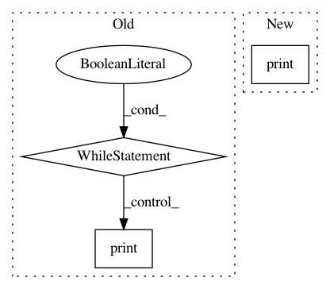

94476ab74dbb7c16ced3f6b680b822df01c8b9f6,example5.py,,,#,48
Before Change
with tf.Session() as sess:
sess.run(tf.global_variables_initializer())
cnt, num_samples, start_t = 0, 0, time.perf_counter()
while True:
x = sess.run(data_node)
cnt += 1
num_samples += x["feature"].shape[0]
if cnt % 10 == 0:
time_used = time.perf_counter() - start_t
print("data speed: %d/s" % int(num_samples / time_used))
cnt, num_samples, start_t = 0, 0, time.perf_counter()
After Change
sess.run(tf.global_variables_initializer())
cnt, num_samples, start_t = 0, 0, time.perf_counter()
while True:
print(sess.run(data_node))
In pattern: SUPERPATTERN
Frequency: 3
Non-data size: 3
Instances
Project Name: hanxiao/bert-as-service
Commit Name: 94476ab74dbb7c16ced3f6b680b822df01c8b9f6
Time: 2018-11-27
Author: hanhxiao@tencent.com
File Name: example5.py
Class Name:
Method Name:
Project Name: hanxiao/bert-as-service
Commit Name: e7ca574c2479137864e86b7c8e2555ded9a89bda
Time: 2018-11-27
Author: hanhxiao@tencent.com
File Name: example5.py
Class Name:
Method Name:
Project Name: tensorlayer/tensorlayer
Commit Name: 16a31e2c9fedc654e9117b42b8144adf1d0e4900
Time: 2020-02-03
Author: 34995488+Tokarev-TT-33@users.noreply.github.com
File Name: examples/reinforcement_learning/tutorial_A3C.py
Class Name:
Method Name: